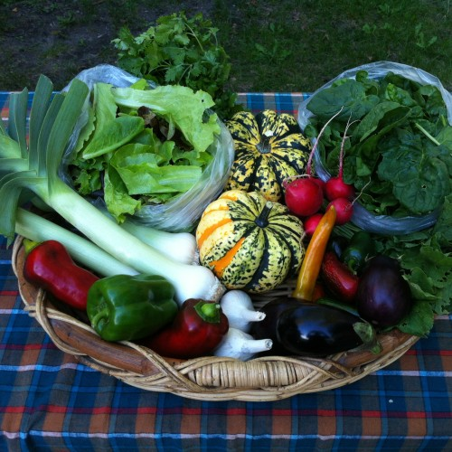

2014 Sign-up Form!
We are now accepting applications for Butterbean's 2014 CSA! Here is a link to our sign-up form --please contact us if you have any questions and check out our CSA page for more information.

We are a small, certified organic vegetable CSA farm located just east of Madison. We grow a diverse array of vegetables for our CSA members and local restaurants.
About the Farmers: Sarah and Dan have seven collective years of farming experience prior to starting their own farm last year. They have been living in Madison and working on farms in the area since 2010.
Our mission is to be good stewards of the land, to grow delicious and nutritious food for our friends and neighbors, and to savor the challenges and bounty of farming. Our farm grows produce without using synthetic chemical pesticides and fertilizers, sources organic seeds, and utilizes conservation practices that maintain and improve the health of the land we farm, as well as the land around us. We embrace the idea that investing in healthy soils through increasing organic matter and nutrients, cover cropping, and crop rotation will result in healthy plants, and clean, nutritious food for our community.


{kind=link}
{kind=link}